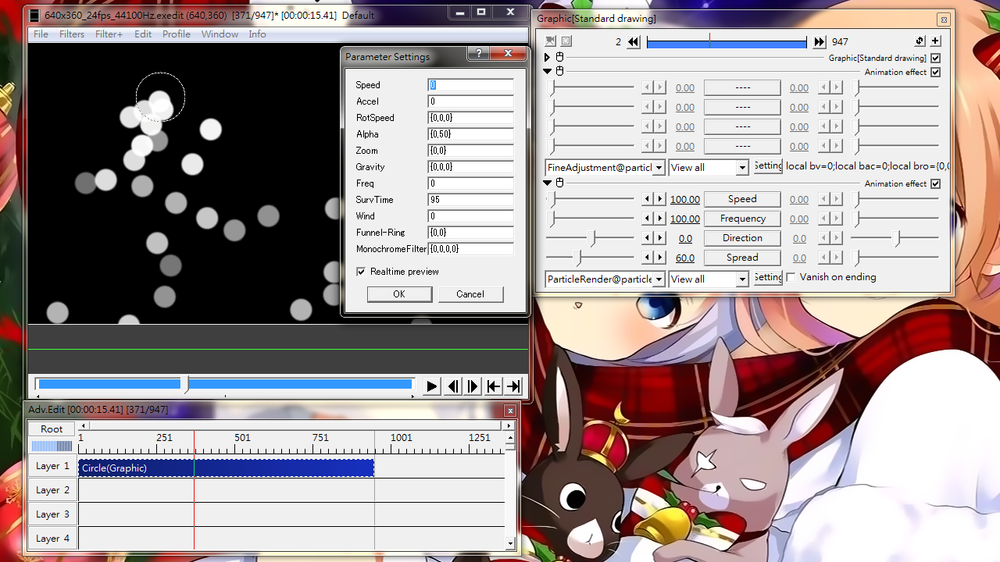
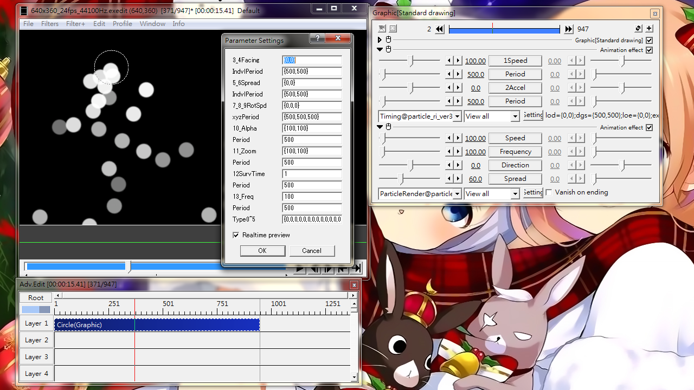
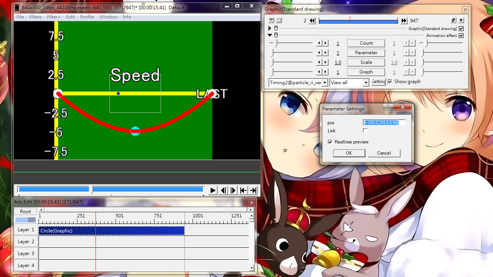

Fig09A: setting panel for FineAdjustment@particle_ri_ver3

Fig09B: setting panel for Timing@particle_ri_ver3

Fig09C: setting panel for Timing2@particle_ri_ver3
Fine Adjustment
Let certain parameters to be randomized within a user-defined range.
Values can be positive or negative, which leads to different range calculation method.
Positive values
Assuming the base parameter value is x, and the value in FineAdjustment is v:
Range= x*v÷100
Upper bound= x+Range
Lower bound= x-Range
Negative values
Assuming the base parameter value is x, and the value in FineAdjustment is v, where v is negative:
Range= -2*v
Upper bound= x-v
Lower bound= x+v
Setting dialog
Speed
Randomization range for output speed
Accel
Randomization range for particle acceleration
RotSpeed
Randomization range for particle rotation speed. Consists of as set of 3 values for the 3 axis. If only a single value is given, the same value will be applied to all axis
Alpha
Randomization range for transparency: {initial_transparency,final_transparency}
Zoom
Randomization range for magnification: {initial_mag,final_mag}
Gravity
A set of 3 values for the 3 axis: {x_gravity,y_gravity,z_gravity}
Freq
Randomization range for output frequency
SurvTime
Randomization range for survival time of each particle
Wind
Add irregularity to wind power. To be used with Wind@particle_ri_ver3 in another object.
Funnel-Ring
Randomize funnel and ring count when using with Funnel@particle_ri_ver3
Consists of a pair of number: {funnel_count,ring_count}
If only a single value is given, it will be the same as {value,value}
MonochromeFilter
Randomize parameters in Filter(For_monochrome)@particle_ri_ver3
{StTime,ChangeIntvl,KeepIntvl,EndTime}
Please read 08_Filter and Filter(For_monochrome).html for details
Timing
Add temporal changes to initial value of various parameters. Provides unidirectional change and repetitive change. Time zero counts from object starts.
Sliders
1Speed
Particle output speed after temporal change
Period (for 1Speed)
Fluctuation period(type1~3) or transition time(type4~5)
2Accel
Particle acceleration after temporal change
Period (for 2Accel)
Fluctuation period(type1~3) or transition time(type4~5)
Setting dialog
3_4Facing
Particle output direction on the xy-plane and along depth after temporal change.
Input format: {xy_direction,z_direction}
A single value is equivalent to {value,value}
IndvlPeriod (for 3_4Facing)
Fluctuation period for 3_4Facing in milliseconds
Input format: {xy_period,z_period}
A single value is equivalent to {value,value}
5_6Spread
Particle spread angle on xy-plane and along depth after temporal change
2: Repetitive change according to Period setting. Jump back to initial value at start of each cycle.◢◢◢
3: Repetitive change in gardual changing cycle. ◢◣◢◣◢◣
4: The first period keep the base value unchanged. Gradually change to setting value by object's end. ___◢
5: complete transition in the first period, than keep the vale. ◢￣￣
6: inputted value is interpreted as a range instead of a final point value. Only applicatable to 3_4Facing.
Timing2
Allows object-time-based temporal setting using a separate object on layer N-1. Multiple Timing2 can be attached to the same object. ParticleRender@ should not be attached to the same object.
Sliders
Count
Number of control anchors on graph. Max 10 achors per Timing2 attached.
Parameter
The parameter to be given temporal variation:
1: Particle output speed
2: Particle acceleration
3: Output direction
4: z-output direction
5: Spread angle
6: z-Spread angle
7: x-Rotation speed
8: y-Rotation speed
9: z-Rotation speed
10: Initial transparency
11: Final transparency
12: Initial magnification
13: Final magnification
14: Output frequency
15: Survival time
Scale
Increase the value on the vertical axis of the graph, i.e. stronger effect
Graph
Show variation graph in the order of attached Timing2@
The graph display function is effective for the last attached Timing2@ only
Setting dialog
pos
Position of control anchor(s) in numbers
Link
Link two consecustive Timing2@ controlling the same parameter. Use this to gives more than 10 control anchors per graph.